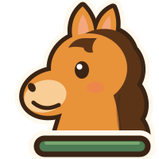
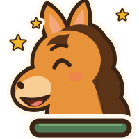
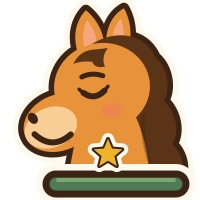
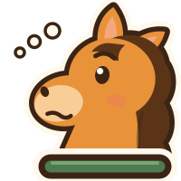
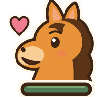
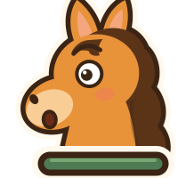
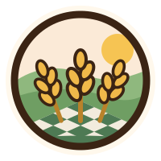
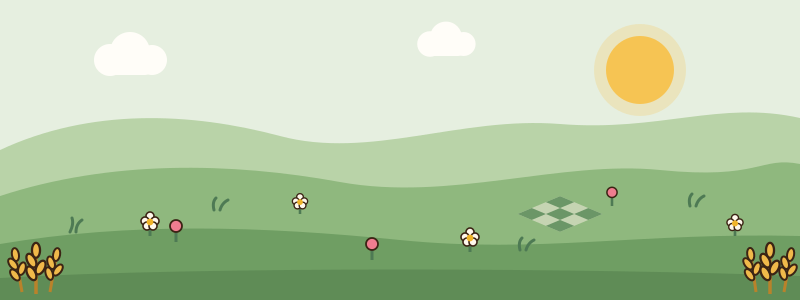

Eigen SVG in plaats van emoji. Links steeds het huidige emoji, daarnaast de tekening op 64 px, in de ronde knop zoals in de les (52 px in 64), en op 200 px. Links licht (#f5f0e6), rechts donker (#1c1a16). Nog niets ingebouwd.
| emoji | 64 px | in de knop (52 px in 64) | 200 px | emoji | 64 px | in de knop (52 px in 64) | 200 px | |
| Blij | 🐴 |  | 🐴 | |||||
| Juicht | 🐴🎉 |  | 🐴🎉 | |||||
| Trots | 🐴⭐ |  | 🐴⭐ | |||||
| Denkt | 🐴💭 |  | 🐴💭 | |||||
| Moedigt aan | 🐴💪 |  | 🐴💪 | |||||
| Verrast | 🐴❗ |  | 🐴❗ | |||||
| Wereldwapen | 🌾 |  | 🌾 |
Rechts met een proefpad en drie haltes erop, om te zien of het landschap rustig genoeg is.
